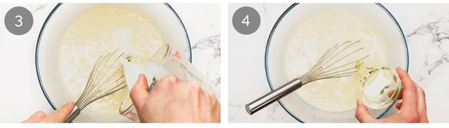
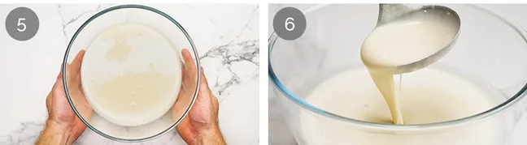
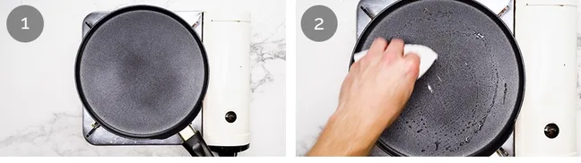
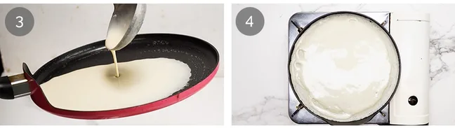
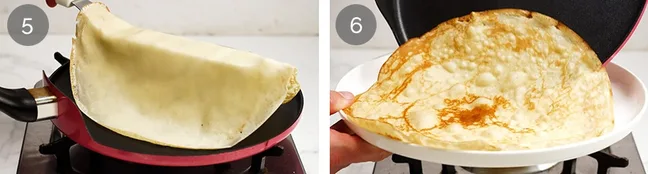

What Fruity Pancakes taste like
Fruity pancakes taste soft, fluffy, and gently sweet. The pancakes themselves have a warm, comforting flavour, while the fruit adds a fresh, juicy sweetness and a light tang that balances everything nicely. Each bite feels light and refreshing, with the fruit enhancing the taste without overpowering the pancakes. Overall, they taste bright, smooth, and satisfying—perfect for a sweet but not too heavy treat.
Ingredients for Fruity Pancakes

Plain/all-purpose flour, sifted to keep the batter smooth.Sugar just a little to lightly sweeten without overpowering. Eggs - provide structure and help the pancakes hold together.Milk thins the batter for a soft, tender texture. Water lightens the batter so the pancakes aren't heavy.Oil keeps the pancakes soft and moist. Butter used in the pan to create golden edges and add rich flavour.
1.MAKING THE BATTER

Sift flour into a large mixing bowl. Add sugar and salt, then whisk to combine.
Make a well in the centre and add the eggs. Whisk gently and only mix in a bit of the flour. You can't blend all the flour with just the eggs yet, so just mix in enough to make a thick paste.
Gradually add the milk, whisking between each addition. It will let the batter turn silky and lump-free. It should feel smooth and light, almost like pouring cream.
Whisk in the water and oil until shiny and lump-free. The water lightens the batter, it will help having thin crêpes but still flexible, while the oil keeps them soft and prevents sticking.
Rest for 1 hour covered, on the counter at room temperature. The batter will thicken a little as it rests, this resting step relaxes the gluten, the flour absorbs the liquid, so the crêpes cook up soft and never rubbery.
After resting, the batter should be smooth, a bit thicker, and perfectly pourable.
2.COOK THE CREPES
Heat a 24cm / 9.5″ non-stick crêpe pan over medium-high heat (medium if your stove runs hot). If you don't have one, any good non-stick pan will work, just adjust how much batter you pour in depending on the size, so it spreads nicely without being too thick or thin.
Melt about ½ tsp butter, then wipe it off with a paper towel, you just want a little butter left for flavour, no visible pools. If you leave too much butter, it will stop the batter from spreading evenly. The butter gives flavour and a touch of crispness around the edges.
Pour the batter: using a ladle, scoop up ¼ cup of batter, lift the pan off the heat, ladle most of the batter into the centre, and immediately swirl the pan so the batter coats the surface in a thin, even layer. Still while swirling, use the rest of the batter to fill up the empty spots before it sets. Tilting quickly gives you uniform crêpes.
Cook for 45 seconds to 1 minute until the underside turns pale golden with light brown speckles.
Flip using a long, thin spatula. Slide it gently under the crêpe without tearing the surface, lift and flip. Cook the second side for about 30 seconds. A long, narrow spatula works best for flipping crêpes because it slides under the thin crêpe without tearing it.And don't fear the flip.
Slide onto a plate and repeat, adding a small bit of butter each time. Stack the crêpes as you go, they'll stay warm and soft. Serve with your preferred fillings or toppings!